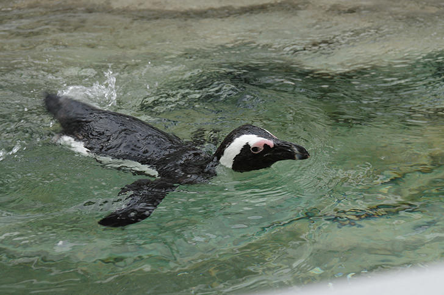

| ペンギンとは |
漢字で書くと今では使われることは稀ですが、「人鳥（じんちょう）」「企鵝（きが、企は爪先立つの意、鵝はガチョウ）」という和名があります。
南半球の広い緯度範囲に分布します。主に南極大陸で繁殖するのはコウテイペンギンとアデリーペンギンの2種のみです。
ペンギンは、現在では6属19種ですが、化石から、かつてはもっと多くの種類が存在したことが確認されています。 |
| アンサー① |
脚が短いと思われていますが、実際には体内の皮下脂肪の内側で( 脚を屈折 )させています。 |
|
|
関節はこの状態のまま固定されているので、脚を伸ばすことはできません。
体外から出ているのは足首から下の部分だけです。
|
| アンサー② |
飛翔能力を失い、水中での遊泳に使われる特殊な翼を( フリッパー )といいます。 |
|
|
ペンギンの翼は、鳥類の多くが飛翔に使う翼が特殊化したものです。
|
| アンサー③ |
氷上や砂浜などで腹ばいになって滑ることを( トボガン )といいます。 |
|
|
陸上ではフリッパーをばたつかせながら歩きますが、氷上や砂浜などではトボガンで移動します。
|
| アンサー④ |
コウテイペンギンは、( －60℃ )の中で繁殖するため、世界で最も過酷な子育てをする鳥と言われます。 |
|
|
ほとんどのペンギンは他の鳥類と同様に春から夏にかけて繁殖します。
|
| アンサー⑤ |
ゴミの投棄や( 石油 )流出など、様々な海洋汚染がペンギンの脅威となっています。 |
|
|
特に、重要な航路に面した海域や油田地帯に接した海域にこの傾向が強くみられます。
|
| アンサー⑥ |
動物園や水族館で飼育されることが多くなり、現在世界で飼われているペンギンの( 1/4 )が日本にいると言われています。 |
|
|
日中国交正常化に際しジャイアントパンダが中国より送られてきた返礼として、ニホンカモシカとともにケープペンギンが日本から中国に送られました。
|